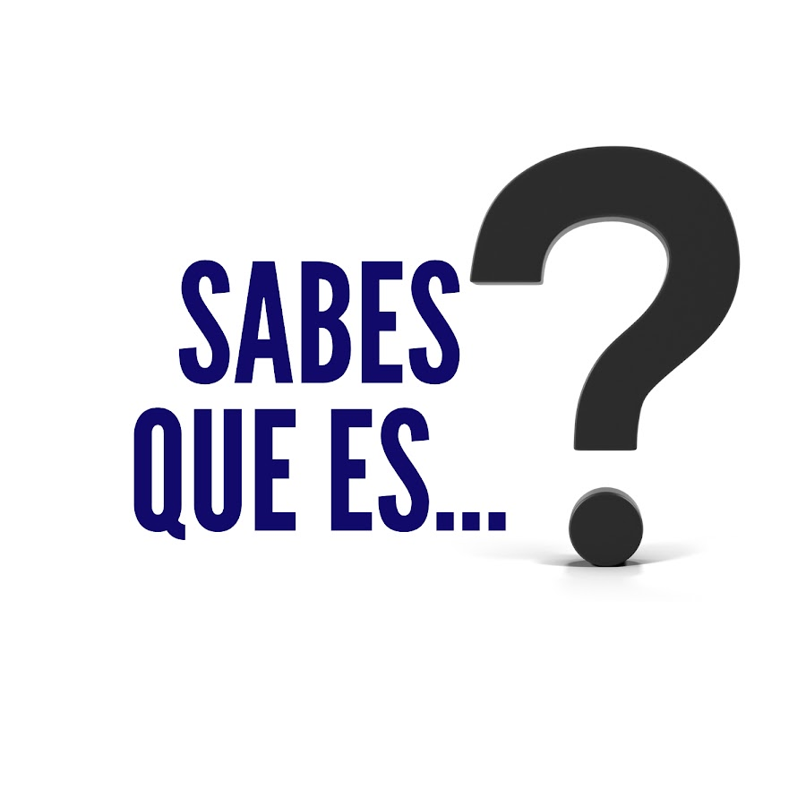
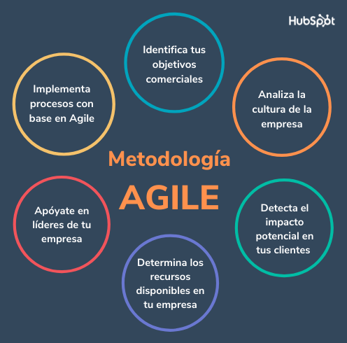
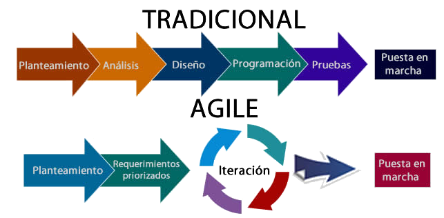

Metodologías Ágiles

INFORMACION PRINCIPAL

¿QUÉ ES?
La metodología ágil es un conjunto de técnicas aplicadas en ciclos de trabajo cortos, con el objetivo de que el proceso de entrega de un proyecto sea más eficiente. Así, con cada etapa completada, ya se pueden entregar avances y se deja de lado la necesidad de esperar hasta el término del proyecto.

¿CUANDO NACIO EL CONCEPTO "ÁGILE"?
Creada en 2001 por un grupo de programadores de TI (Tecnología de la Información) a través del “Manifiesto por el Desarrollo Ágil de Software”, la metodología ágil se propone entregar valor al cliente de manera más rápida y puede proporcionar numerosos beneficios a tu empresa, como:
- optimización del flujo de trabajo.
- aumento de la productividad de tu equipo.
- mayor satisfacción del cliente.

¿PARA QUE TIPOS DE PROYECTOS SON MAS ADECUADAS LAS METODOLOGÍAS ÁGILES?
- proyectos cuya solución técnica se desconoce
- proyectos de alta complejidad
- proyectos urgentes

¿Cuál es la diferencia entre la metodología ágil y una tradicional?
- Con la metodología ágil es posible controlar mejor el presupuesto, ya que permite la entrega de pequeños resultados que ayudan a alinear los costos al objetivo final del proyecto.
- En la metodología tradicional hay una planificación inicial que se debe seguir hasta el final. Gracias a los sprints o ciclos de trabajo característicos de la ágil, esto se vuelve más flexible, contribuyendo a una mejor gestión de riesgos.
- La colaboración con el cliente es más efectiva en la metodología ágil, ya que recibe varios resultados durante todo el proceso y puede participar de forma activa en su mejora.